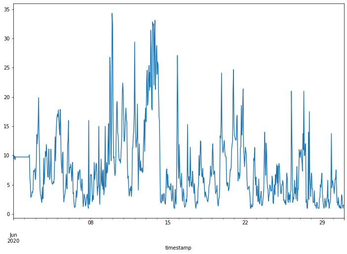
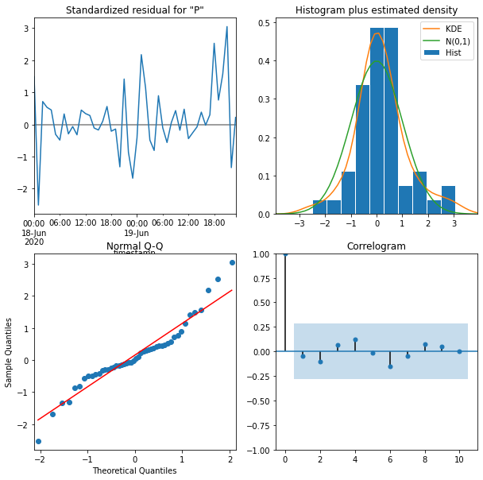
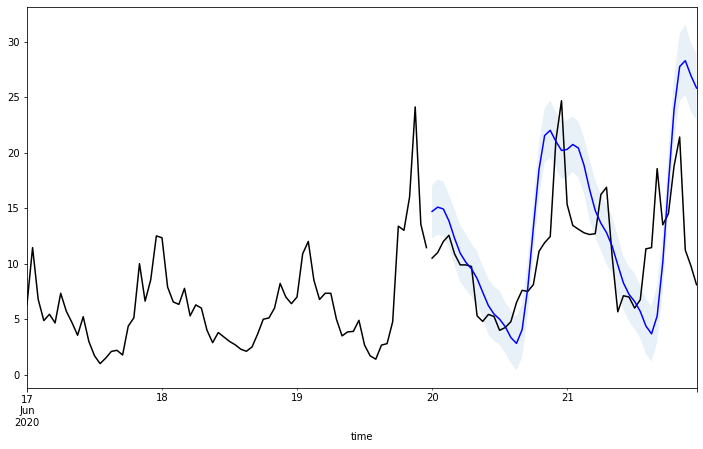
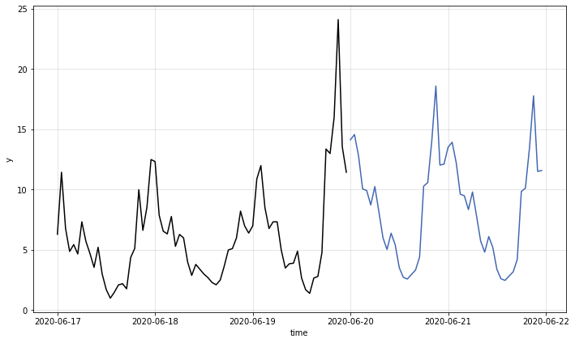

4.2. 時間序列資料預測

Table Of Contents
前一章節介紹了各種處理時序資料的方法，有視覺化呈現資料、時序資料分解……等，經過處理後的資料可以讓我們更進一步的運用，擁有過去的資料後，會想要預知未來，因此本章節將會判斷時序資料的特性以及使用多種預測模型找出資料的的模式，藉此預測未來。
章節目標
- 時序資料特性的判斷：平穩性
- 學習各種預測模型並進行比較
- 使用時序資料進行訓練與預測
套件安裝與引入
在本章節中，我們將會使用到 pandas, matplotlib, numpy, statsmodels, warnings 等套件，這些套件由於在我們使用的開發平台 Colab 上皆已預先安裝好，因此不需要再另行安裝。然而，我們還會另外使用兩個 Colab 並未預先安裝好的套件：kats 和 pmdarima，需使用下列的方式自行安裝：
# 升級 pip，確保可以順利安裝後續的函式模組
!pip install --upgrade pip
# 安裝特定版本的 kats、ax-platform 和 statsmodels 函式模組
# kats: Facebook 提供的時間序列工具箱
# ax-platform: 用於自適應實驗設計和優化的平台
# statsmodels: 提供統計模型和擬合的函式模組
!pip install kats==0.1 ax-platform==0.2.3 statsmodels==0.12.2
# 安裝 pmdarima 函式模組，它提供自動選擇 ARIMA 模型的功能，適用於時間序列分析
!pip install pmdarima
待安裝完畢後，即可使用下列的語法先行引入相關的套件，完成本章節的準備工作：
import warnings # 引入警告處理模組，用於控制警告訊息
import numpy as np # 引入數學運算和資料處理的基礎函式模組
import pandas as pd # 引入數學運算和資料處理的基礎函式模組
import pmdarima as pm # 引入時間序列預測的 pmdarima 函式模組，它提供自動選擇 ARIMA 模型的功能
import statsmodels.api as sm # 引入統計模型和擬合的 statsmodels 函式模組，並提供時間序列分析的方法
import matplotlib.pyplot as plt # 引入繪圖函式模組，用於資料視覺化
import os, zipfile # 引入操作系統和壓縮檔案的函式模組，用於檔案操作和解壓縮
from dateutil import parser as datetime_parser # 引入日期時間解析工具
from statsmodels.tsa.arima.model import ARIMA # 引入時間序列模型
from statsmodels.tsa.statespace.sarimax import SARIMAX # 引入時間序列模型
from statsmodels.tsa.stattools import adfuller, kpss # 引入時間序列穩定性檢測工具
from kats.consts import TimeSeriesData, TimeSeriesIterator # 引入 Kats（Facebook 提供的時間序列工具箱）的基本結構和工具
from kats.detectors.outlier import OutlierDetector # 引入 Kats 的異常值檢測工具
from kats.models.prophet import ProphetModel, ProphetParams # 引入 Kats 提供的 Prophet 模型，及其參數設定
from kats.models.lstm import LSTMModel, LSTMParams # 引入 Kats 提供的 LSTM 模型，及其參數設定
from kats.models.holtwinters import HoltWintersParams, HoltWintersModel # 引入 Kats 提供的 Holt-Winters 模型及其參數設定
讀取資料
本章節的探討主題為時序資料的資料預測，因此我們將分別以民生公共物聯網資料平台上的空品、水位和氣象資料進行資料讀取的演示，接著再使用空品資料進行更進一步的探究。其中，每一類別的資料處理都將使用其中一個測站長期以來觀測到的資料作為資料集，而在 dataframe 的時間欄位名稱則為設為 timestamp，由於時間欄位的數值具有唯一性，因此我們也將使用此欄位作為 dataframe 的索引 (index)。
空品資料
由於我們這次要使用的是長時間的歷史資料，因此我們不直接使用 pyCIOT 套件的讀取資料功能，而直接從民生公共物聯網資料平台的歷史資料庫下載「中研院校園空品微型感測器」的歷史資料，並存入 Air 資料夾中。
同時，由於所下載的資料是 zip 壓縮檔案的格式，我們需要先逐一將其解壓縮，產生每日資料的壓縮檔案，接著再將每日資料的壓縮檔案解壓縮，存入 CSV_Air 資料夾中。
!mkdir Air CSV_Air # 創建資料夾來存放下載的資料和解壓縮後的 CSV 檔案
# 從指定網址下載 zip 檔案
!wget -O Air/2018.zip -q "https://history.colife.org.tw/?r=/download&path=L%2Bepuuawo%2BWTgeizqi%2FkuK3noJTpmaJf5qCh5ZyS56m65ZOB5b6u5Z6L5oSf5ris5ZmoLzIwMTguemlw"
!wget -O Air/2019.zip -q "https://history.colife.org.tw/?r=/download&path=L%2Bepuuawo%2BWTgeizqi%2FkuK3noJTpmaJf5qCh5ZyS56m65ZOB5b6u5Z6L5oSf5ris5ZmoLzIwMTkuemlw"
!wget -O Air/2020.zip -q "https://history.colife.org.tw/?r=/download&path=L%2Bepuuawo%2BWTgeizqi%2FkuK3noJTpmaJf5qCh5ZyS56m65ZOB5b6u5Z6L5oSf5ris5ZmoLzIwMjAuemlw"
!wget -O Air/2021.zip -q "https://history.colife.org.tw/?r=/download&path=L%2Bepuuawo%2BWTgeizqi%2FkuK3noJTpmaJf5qCh5ZyS56m65ZOB5b6u5Z6L5oSf5ris5ZmoLzIwMjEuemlw"
# 定義資料夾和副檔名的變數
folder = 'Air'
extension_zip = '.zip'
extension_csv = '.csv'
# 解壓縮第一層的 zip 檔案
for subfolder in os.listdir(folder):
path = f'{folder}/{subfolder}'
if path.endswith(extension_zip):
print(path)
zip_ref = zipfile.ZipFile(path)
zip_ref.extractall(folder)
zip_ref.close()
# 檢查是否還有子資料夾中包含的 zip 檔案並進行解壓縮
for subfolder in os.listdir(folder):
path = f'{folder}/{subfolder}'
if os.path.isdir(path):
for item in os.listdir(path):
if item.endswith(extension_zip):
file_name = f'{path}/{item}'
print(file_name)
zip_ref = zipfile.ZipFile(file_name)
zip_ref.extractall(path)
zip_ref.close()
# 檢查更多層次的子資料夾中是否有 zip 檔，如果有則解壓縮
for item in os.listdir(path):
path2 = f'{path}/{item}'
if os.path.isdir(path2):
for it in os.listdir(path2):
if it.endswith(extension_zip):
file_name = f'{path2}/{it}'
print(file_name)
zip_ref = zipfile.ZipFile(file_name)
zip_ref.extractall('CSV_Air') # 將解壓縮後的檔案儲存到指定資料夾
zip_ref.close()
elif item.endswith(extension_csv): # 如果找到 CSV 檔，則將它移到指定的資料夾
os.rename(path2, f'CSV_Air/{item}')
現在 CSV_Air 資料夾中即有每日所有感測器資料的 csv 格式檔案，為了將單一測站 (例如代碼為 74DA38C7D2AC 的測站) 的資料過濾出來，我們需要讀取每個 csv 檔案，並將檔案中該測站的資料存入名叫 air 的 dataframe 中。最後我們將所有下載的資料與解壓縮後產生的資料移除，以節省雲端的儲存空間。
# 定義目標資料夾和檔案副檔名
folder = 'CSV_Air'
extension_csv = '.csv'
id = '74DA38C7D2AC'
# 創建空的 DataFrame 來存放讀取的資料
air = pd.DataFrame()
for item in os.listdir(folder):
file_name = f'{folder}/{item}'
df = pd.read_csv(file_name)
# 確保 pm25 欄位名稱是大寫的「PM25」
if 'pm25' in list(df.columns):
df.rename({'pm25':'PM25'}, axis=1, inplace=True)
# 篩選出指定 device_id 的資料
filtered = df.query(f'device_id==@id')
# 合併到主要的 DataFrame 中
air = pd.concat([air, filtered], ignore_index=True)
# 清除空的時間戳記欄位資料
air.dropna(subset=['timestamp'], inplace=True)
# 將時間戳記欄位轉換為 datetime 格式且去除時區資訊
for i, row in air.iterrows():
aware = datetime_parser.parse(str(row['timestamp']))
naive = aware.replace(tzinfo=None)
air.at[i, 'timestamp'] = naive
# 將時間戳記設為 DataFrame 的索引
air.set_index('timestamp', inplace=True)
# 刪除原始的 Air 和 CSV_Air 資料夾
!rm -rf Air CSV_Air
最後，我們重新整理該測站的資料，將不需要用到的欄位資訊刪除，並且依照時間進行排序如下：
# 移除「device_id」和「SiteName」這兩個欄位
air.drop(columns=['device_id', 'SiteName'], inplace=True)
# 根據時間戳記排序資料
air.sort_values(by='timestamp', inplace=True)
# 顯示資料集的簡要資訊
air.info()
# 顯示資料集的簡要資訊
print(air.info())
<class 'pandas.core.frame.DataFrame'>
DatetimeIndex: 195305 entries, 2018-08-01 00:00:05 to 2021-12-31 23:54:46
Data columns (total 1 columns):
\# Column Non-Null Count Dtype
--- ------ -------------- -----
0 PM25 195305 non-null object
dtypes: object(1)
memory usage: 3.0+ MB
PM25
timestamp
2018-08-01 00:00:05 20.0
2018-08-01 00:30:18 17.0
2018-08-01 01:12:34 18.0
2018-08-01 01:18:36 21.0
2018-08-01 01:30:44 22.0
水位資料
和空品資料的範例一樣，由於我們這次要使用的是長時間的歷史資料，因此我們不直接使用 pyCIOT 套件的讀取資料功能，而直接從民生公共物聯網資料平台的歷史資料庫下載「水利署地下水位站」的歷史資料，並存入 Water 資料夾中。
同時，由於所下載的資料是 zip 壓縮檔案的格式，我們需要先逐一將其解壓縮，產生每日資料的壓縮檔案，接著再將每日資料的壓縮檔案解壓縮，存入 CSV_Water 資料夾中。
# 建立資料夾存放下載的資料
!mkdir Water CSV_Water
# 下載 2018 到 2021 年的水質資料
!wget -O Water/2018.zip "https://history.colife.org.tw/?r=/download&path=L%2BawtOizh%2Ba6kC%2FmsLTliKnnvbJf5rKz5bed5rC05L2N56uZLzIwMTguemlw"
!wget -O Water/2019.zip "https://history.colife.org.tw/?r=/download&path=L%2BawtOizh%2Ba6kC%2FmsLTliKnnvbJf5rKz5bed5rC05L2N56uZLzIwMTkuemlw"
!wget -O Water/2020.zip "https://history.colife.org.tw/?r=/download&path=L%2BawtOizh%2Ba6kC%2FmsLTliKnnvbJf5rKz5bed5rC05L2N56uZLzIwMjAuemlw"
!wget -O Water/2021.zip "https://history.colife.org.tw/?r=/download&path=L%2BawtOizh%2Ba6kC%2FmsLTliKnnvbJf5rKz5bed5rC05L2N56uZLzIwMjEuemlw"
# 定義要解壓縮的目錄及檔案附檔名
folder = 'Water'
extension_zip = '.zip'
extension_csv = '.csv'
# 解壓縮主目錄下的 .zip 檔
for subfolder in os.listdir(folder):
path = f'{folder}/{subfolder}'
if path.endswith(extension_zip):
print(path)
zip_ref = zipfile.ZipFile(path)
zip_ref.extractall(folder)
zip_ref.close()
# 解壓縮子目錄下的 .zip 檔
for subfolder in os.listdir(folder):
path = f'{folder}/{subfolder}'
if os.path.isdir(path):
for item in os.listdir(path):
if item.endswith(extension_zip):
file_name = f'{path}/{item}'
print(file_name)
zip_ref = zipfile.ZipFile(file_name)
zip_ref.extractall(path)
zip_ref.close()
# 若子目錄中有更深層的資料夾，則將其中的 .zip 檔案也進行解壓縮
for item in os.listdir(path):
path2 = f'{path}/{item}'
if os.path.isdir(path2):
for it in os.listdir(path2):
if it.endswith(extension_zip) and not it.endswith('QC.zip'):
file_name = f'{path2}/{it}'
print(file_name)
zip_ref = zipfile.ZipFile(file_name)
zip_ref.extractall('CSV_Water') # 決定解壓縮的目標路徑
zip_ref.close()
elif item.endswith(extension_csv):
os.rename(path2, f'CSV_Water/{item}')
現在 CSV_Water 資料夾中即有每日所有感測器資料的 csv 格式檔案，為了將單一測站 (例如代碼為 338c9c1c-57d8-41d7-9af2-731fb86e632c 的測站) 的資料過濾出來，我們需要讀取每個 csv 檔案，並將檔案中該測站的資料存入名叫 water 的 dataframe 中。最後我們將所有下載的資料與解壓縮後產生的資料移除，以節省雲端的儲存空間。
# 定義資料夾位置和 CSV 檔案的副檔名
folder = 'CSV_Water'
extension_csv = '.csv'
id = '338c9c1c-57d8-41d7-9af2-731fb86e632c'
# 初始化 DataFrame
water = pd.DataFrame()
# 讀取目錄下的所有 CSV 檔案
for item in os.listdir(folder):
file_name = f'{folder}/{item}'
df = pd.read_csv(file_name)
# 若資料列名有「pm25」，則將其更名為「PM25」
if 'pm25' in list(df.columns):
df.rename({'pm25':'PM25'}, axis=1, inplace=True)
# 只選取特定 id 的資料
filtered = df.query(f'station_id==@id')
water = pd.concat([water, filtered], ignore_index=True)
# 移除沒有 timestamp 的資料列
water.dropna(subset=['timestamp'], inplace=True)
# 將 timestamp 的時區資訊移除
for i, row in water.iterrows():
aware = datetime_parser.parse(str(row['timestamp']))
naive = aware.replace(tzinfo=None)
water.at[i, 'timestamp'] = naive
# 將 timestamp 設定為資料框的索引
water.set_index('timestamp', inplace=True)
# 移除不需要的資料夾
!rm -rf Water CSV_Water
最後，我們重新整理該測站的資料，將不需要用到的欄位資訊刪除，並且依照時間進行排序如下：
# 移除不需要的資料欄
water.drop(columns=['station_id', 'ciOrgname', 'ciCategory', 'Organize_Name', 'CategoryInfos_Name', 'PQ_name', 'PQ_fullname', 'PQ_description', 'PQ_unit', 'PQ_id'], inplace=True)
# 根據 timestamp 排序資料
water.sort_values(by='timestamp', inplace=True)
# 顯示資料的基本資訊
water.info()
# 顯示前五筆資料
print(water.head())
<class 'pandas.core.frame.DataFrame'>
DatetimeIndex: 213466 entries, 2018-01-01 00:20:00 to 2021-12-07 11:00:00
Data columns (total 1 columns):
\# Column Non-Null Count Dtype
--- ------ -------------- -----
0 value 213465 non-null float64
dtypes: float64(1)
memory usage: 3.3 MB
value
timestamp
2018-01-01 00:20:00 49.130000
2018-01-01 00:25:00 49.139999
2018-01-01 00:30:00 49.130001
2018-01-01 00:35:00 49.130001
2018-01-01 00:40:00 49.130001
氣象資料
我們從民生公共物聯網資料平台的歷史資料庫下載「中央氣象局自動氣象站」的歷史資料，並存入 Weather 資料夾中。
同時，由於所下載的資料是 zip 壓縮檔案的格式，我們需要先逐一將其解壓縮，產生每日資料的壓縮檔案，接著再將每日資料的壓縮檔案解壓縮，存入 CSV_Weather 資料夾中。
# 建立 Weather 和 CSV_Weather 資料夾
!mkdir Weather CSV_Weather
# 從指定網址下載資料並儲存至 Weather 資料夾
!wget -O Weather/2019.zip "https://history.colife.org.tw/?r=/download&path=L%2Bawo%2BixoS%2FkuK3lpK7msKPosaHlsYBf6Ieq5YuV5rCj6LGh56uZLzIwMTkuemlw"
!wget -O Weather/2020.zip "https://history.colife.org.tw/?r=/download&path=L%2Bawo%2BixoS%2FkuK3lpK7msKPosaHlsYBf6Ieq5YuV5rCj6LGh56uZLzIwMjAuemlw"
!wget -O Weather/2021.zip "https://history.colife.org.tw/?r=/download&path=L%2Bawo%2BixoS%2FkuK3lpK7msKPosaHlsYBf6Ieq5YuV5rCj6LGh56uZLzIwMjEuemlw"
# 定義要解壓縮的目錄及檔案附檔名
folder = 'Weather'
extension_zip = '.zip'
extension_csv = '.csv'
# 解壓縮主目錄下的 zip 檔案
for subfolder in os.listdir(folder):
path = f'{folder}/{subfolder}'
if path.endswith(extension_zip):
print(path)
zip_ref = zipfile.ZipFile(path)
zip_ref.extractall(folder)
zip_ref.close()
# 對 Weather 目錄下的子目錄進行解壓縮
for subfolder in os.listdir(folder):
path = f'{folder}/{subfolder}'
if os.path.isdir(path):
for item in os.listdir(path):
if item.endswith(extension_zip):
file_name = f'{path}/{item}'
print(file_name)
zip_ref = zipfile.ZipFile(file_name)
zip_ref.extractall(path)
zip_ref.close()
# 對子目錄中的子目錄進行解壓縮，並將 csv 檔案移至 CSV_Weather 資料夾
for item in os.listdir(path):
path2 = f'{path}/{item}'
if os.path.isdir(path2):
for it in os.listdir(path2):
if it.endswith(extension_zip):
file_name = f'{path2}/{it}'
print(file_name)
zip_ref = zipfile.ZipFile(file_name)
zip_ref.extractall('CSV_Weather') # 解壓縮至指定目錄
zip_ref.close()
elif item.endswith(extension_csv):
os.rename(path2, f'CSV_Weather/{item}')
現在 CSV_Weather 資料夾中即有每日所有感測器資料的 csv 格式檔案，為了將單一測站 (例如代碼為 C0U750 的測站) 的資料過濾出來，我們需要讀取每個 csv 檔案，並將檔案中該測站的資料存入名叫 weather 的 dataframe 中。最後我們將所有下載的資料與解壓縮後產生的資料移除，以節省雲端的儲存空間。
# 設定資料夾路徑和副檔名
folder = 'CSV_Weather'
extension_csv = '.csv'
id = 'C0U750' # 指定要篩選的站點 ID
# 建立一個空的 DataFrame，用於儲存結果
weather = pd.DataFrame()
# 讀取 CSV_Weather 資料夾中的所有 csv 檔案
for item in os.listdir(folder):
file_name = f'{folder}/{item}'
df = pd.read_csv(file_name)
# 若 csv 檔中有「pm25」欄位，將其重新命名為「PM25」
if 'pm25' in list(df.columns):
df.rename({'pm25':'PM25'}, axis=1, inplace=True)
# 依據站點 ID 篩選資料
filtered = df.query(f'station_id==@id')
# 將篩選後的資料加入 weather DataFrame
weather = pd.concat([weather, filtered], ignore_index=True)
# 重新命名某些欄位以便統一命名規則
weather.rename({'obsTime':'timestamp'}, axis=1, inplace=True)
# 移除缺失 timestamp 的資料
weather.dropna(subset=['timestamp'], inplace=True)
# 將 timestamp 轉換成 datetime 格式且移除時區資訊
for i, row in weather.iterrows():
aware = datetime_parser.parse(str(row['timestamp']))
naive = aware.replace(tzinfo=None)
weather.at[i, 'timestamp'] = naive
# 設定 timestamp 為 DataFrame 的索引
weather.set_index('timestamp', inplace=True)
# 刪除資料夾以釋放空間
!rm -rf Weather CSV_Weather
最後，我們重新整理該測站的資料，將不需要用到的欄位資訊刪除，並且依照時間進行排序如下：
# 移除不需要的欄位「station_id」
weather.drop(columns=['station_id'], inplace=True)
# 根據「timestamp」欄位進行排序
weather.sort_values(by='timestamp', inplace=True)
# 顯示 DataFrame 的資訊摘要，包括每列的非空值數、資料型態等
weather.info()
# 顯示 DataFrame 的前五行以確認資料結構
print(weather.head())
<class 'pandas.core.frame.DataFrame'>
DatetimeIndex: 27093 entries, 2019-01-01 00:00:00 to 2021-12-31 23:00:00
Data columns (total 15 columns):
\# Column Non-Null Count Dtype
--- ------ -------------- -----
0 ELEV 27093 non-null float64
1 WDIR 27089 non-null float64
2 WDSD 27089 non-null float64
3 TEMP 27093 non-null float64
4 HUMD 27089 non-null float64
5 PRES 27093 non-null float64
6 SUN 13714 non-null float64
7 H_24R 27089 non-null float64
8 H_FX 27089 non-null float64
9 H_XD 27089 non-null object
10 H_FXT 23364 non-null object
11 D_TX 27074 non-null object
12 D_TXT 7574 non-null object
13 D_TN 27074 non-null object
14 D_TNT 17 non-null object
dtypes: float64(9), object(6)
memory usage: 3.3+ MB
ELEV WDIR WDSD TEMP HUMD PRES SUN H_24R H_FX \
timestamp
2019-01-01 00:00:00 398.0 35.0 5.8 13.4 0.99 981.1 -99.0 18.5 -99.0
2019-01-01 01:00:00 398.0 31.0 5.7 14.1 0.99 981.0 -99.0 0.5 10.8
2019-01-01 02:00:00 398.0 35.0 5.3 13.9 0.99 980.7 -99.0 1.0 -99.0
2019-01-01 03:00:00 398.0 32.0 5.7 13.8 0.99 980.2 -99.0 1.5 -99.0
2019-01-01 04:00:00 398.0 37.0 6.9 13.8 0.99 980.0 -99.0 2.0 12.0
H_XD H_FXT D_TX D_TXT D_TN D_TNT
timestamp
2019-01-01 00:00:00 -99.0 -99.0 14.5 NaN 13.4 NaN
2019-01-01 01:00:00 35.0 NaN 14.1 NaN 13.5 NaN
2019-01-01 02:00:00 -99.0 -99.0 14.1 NaN 13.5 NaN
2019-01-01 03:00:00 -99.0 -99.0 14.1 NaN 13.5 NaN
2019-01-01 04:00:00 39.0 NaN 14.1 NaN 13.5 NaN
以上我們已經成功示範空品資料 (air)、水位資料 (water) 和氣象資料 (weather) 的讀取範例，在接下來的探討中，我們將以空品資料示範初步的時間序列資料處理，相同的方法也可以輕易改成使用水位資料或氣象資料而得到類似的結果，大家可以自行嘗試看看。
資料預處理 (Preprocess)
我們首先依照章節 4.1 所介紹的方法對資料進行重新採樣，將資料分別取每小時平均 (air_hour)、每天平均 (air_day) 和每月平均 (air_month)。
# 針對「air」DataFrame，使用 resample 並根據每小時對資料取平均值
air_hour = air.resample('H').mean()
# 針對「air」DataFrame，使用 resample 並根據每日對資料取平均值
air_day = air.resample('D').mean()
# 針對「air」DataFrame，使用 resample 並根據每月對資料取平均值
air_month = air.resample('M').mean()
接著我們依照章節 4.1 所介紹的離群值偵測方法，將 air_hour 資料中的離群值移除，並將移除後的缺失資料，使用 Forward fill 方法填回。
# 將 air_hour 轉換為 TimeSeriesData 格式
air_ts = TimeSeriesData(air_hour.reset_index(), time_col_name='timestamp')
# 使用 OutlierDetector 進行離群值檢測
outlierDetection = OutlierDetector(air_ts, 'additive')
outlierDetection.detector()
# 移除離群值，這裡選擇不插值
outliers_removed = outlierDetection.remover(interpolate=False)
# 將檢測後的資料轉回 DataFrame 並重新命名欄位
air_hour_df = outliers_removed.to_dataframe()
air_hour_df.rename(columns={'time': 'timestamp', 'y_0': 'PM25'}, inplace=True)
# 將 timestamp 設定為索引
air_hour_df.set_index('timestamp', inplace=True)
air_hour = air_hour_df
# 重新取樣為每小時並取平均值
air_hour = air_hour.resample('H').mean()
# 用 Forward 方法填回缺失值
air_hour.ffill(inplace=True)
平穩性 (Stationary) 檢查
在進行資料預測的探究前，我們先針對資料的平穩性 (stationary) 進行檢查。我們先挑選想要進行檢測的時間區段（例如 2020-06-10 ~ 2020-06-17），並將這個區段的資料存入 data 變數。
# 選擇日期範圍從 2020 年 6 月 10 日到 2020 年 6 月 17 日的資料
data = air_hour.loc['2020-06-10':'2020-06-17']
接著我們計算這些資料的平均數 (mean) 與變異數 (var)，並且進行繪圖。
# 將 data.PM25 的資料轉換為 numpy array
nmp = data.PM25.to_numpy()
size = np.size(nmp)
# 初始化存儲累積平均和變異數的 array
nmp_mean = np.zeros(size)
nmp_var = np.zeros(size)
# 計算每一步的累積平均和變異數
for i in range(size):
nmp_mean[i] = nmp[:i+1].mean() # 到目前為止的平均
nmp_var[i] = nmp[:i+1].var() # 到目前為止的變異數
# 準備畫圖的資料
y1 = nmp_mean[:]
y2 = nmp_var[:]
y3 = nmp
x = np.arange(size)
# 使用 matplotlib 繪製累積平均和變異數的圖表
plt.plot(x, y1, label='mean')
plt.plot(x, y2, label='var')
plt.legend()
plt.show()

從圖中可以發現平均數的變化不大，但是變異數的變化卻很大。我們稱這樣的資料具備較差的平穩性；相反地，若是具備平穩性的資料，其平均數與變異數的變化不會與時間的推移有關。
換句話說，如果資料分布隨著時間有一定的趨勢變化，那它就沒有平穩性；如果資料的分佈不會因為時間推移，平均數與變異數也維持固定，那它就有平穩性 (stationary)。平穩性的資料有利於尋找適合的的模型 (model) 並預測未來的數值。
若要檢查資料是否具有平穩性，至少有下列兩種常見的方法：
- Augmented Dickey Fuller (ADF) test：使用 unit root test，如果 p-value < 0.05，則資料具有平穩性。
- Kwiatkowski-Phillips-Schmidt-Shin (KPSS) test：與 ADF test 相反，如果 p-value < 0.05，則資料不具有平穩性 (non-stationary)。
# 執行 ADF 檢定
result = adfuller(data.PM25.values, autolag='AIC')
# 顯示 ADF 檢定結果
print(f'ADF Statistic: {result[0]}') # ADF 統計值
print(f'p-value: {result[1]}') # p 值
# 輸出 ADF 檢定的臨界值
for key, value in result[4].items():
print('Critial Values:')
print(f' {key}, {value}')
# 執行 KPSS 檢定
result = kpss(data.PM25.values, regression='c')
# 顯示 KPSS 檢定結果
print('\nKPSS Statistic: %f' % result[0]) # KPSS 統計值
print('p-value: %f' % result[1]) # p 值
# 顯示 KPSS 檢定的臨界值
for key, value in result[3].items():
print('Critial Values:')
print(f' {key}, {value}')
ADF Statistic: -2.7026194088541704
p-value: 0.07358609270498144
Critial Values:
1%, -3.4654311561944873
Critial Values:
5%, -2.8769570530458792
Critial Values:
10%, -2.574988319755886
KPSS Statistic: 0.620177
p-value: 0.020802
Critial Values:
10%, 0.347
Critial Values:
5%, 0.463
Critial Values:
2.5%, 0.574
Critial Values:
1%, 0.739
若以我們使用的範例資料為例，經過 ADF 檢測得到的 p-value 為 0.073，因此該資料並沒有平穩性。為了達到平穩性，我們接下來將資料進行差分，也就是將第 i 筆資料減第 i-1 筆資料，並使用得到的結果再次進行檢測。
在 dataframe 的資料格式上我們可以直接使用 data.diff() 來將資料差分 ，並將經過差分後的資料命名為 data_diff。
# 對 data 進行一階差分
data_diff = data.diff()
# 顯示差分後的資料
data_diff
PM25
timestamp
2020-06-10 00:00:00 NaN
2020-06-10 01:00:00 -14.700000
2020-06-10 02:00:00 -8.100000
2020-06-10 03:00:00 0.200000
2020-06-10 04:00:00 -1.900000
... ...
2020-06-17 19:00:00 0.750000
2020-06-17 20:00:00 4.875000
2020-06-17 21:00:00 -3.375000
2020-06-17 22:00:00 1.930556
2020-06-17 23:00:00 3.944444
我們可以看到第一筆資料為 Nan，這是因為第一筆資料無法減去前一筆資料，所以我們要將第一筆資料捨棄。
# 從 data_diff 中移除第一筆資料
data_diff = data_diff[1:]
# 顯示修改後的 data_diff
data_diff
PM25
timestamp
2020-06-10 01:00:00 -14.700000
2020-06-10 02:00:00 -8.100000
2020-06-10 03:00:00 0.200000
2020-06-10 04:00:00 -1.900000
2020-06-10 05:00:00 -1.300000
... ...
2020-06-17 19:00:00 0.750000
2020-06-17 20:00:00 4.875000
2020-06-17 21:00:00 -3.375000
2020-06-17 22:00:00 1.930556
2020-06-17 23:00:00 3.944444
接著我們將資料繪圖來觀察經過差分後資料的平均數與變異數隨時間變化的關係。
# 從一階差分資料中取出 PM2.5 的值
nmp = data_diff.PM25.to_numpy()
# 計算總共有多少資料點
size = np.size(nmp)
# 初始化兩個陣列，分別儲存時序資料的累計平均和累計變異數
nmp_mean = np.zeros(size)
nmp_var = np.zeros(size)
# 透過迴圈，對每個時間點計算到目前為止的累計平均和變異數
for i in range(size):
nmp_mean[i] = nmp[:i+1].mean() # 計算到第i個時間點的平均
nmp_var[i] = nmp[:i+1].var() # 計算到第i個時間點的變異數
# 建立資料序列以便於繪圖
y1 = nmp_mean[:] # 累計平均的資料序列
y2 = nmp_var[:] # 累計變異數的資料序列
y3 = nmp # 原始資料序列
x = np.arange(size) # x軸，代表時間點
# 使用matplotlib進行資料繪圖
plt.plot(x, y1, label='mean') # 繪製累計平均
plt.plot(x, y2, label='var') # 繪製累計變異數
plt.legend() # 繪製累計變異數
plt.show() # 顯示圖形

從以上的結果我們發現平均數的變化依然不大，而變異數的變化則變小了。我們接著重複上述的平穩性檢測步驟：
# 使用 ADF (Augmented Dickey-Fuller) 測試檢查資料的定態性
result = adfuller(data_diff.PM25.values, autolag='AIC')
print(f'ADF Statistic: {result[0]}') # 輸出ADF統計值
print(f'p-value: {result[1]}') # 輸出p值，通常小於0.05表示資料是定態的
# 輸出不同信賴度下的臨界值，與 ADF 統計值進行比較
for key, value in result[4].items():
print('Critial Values:')
print(f' {key}, {value}')
# 使用 KPSS (Kwiatkowski-Phillips-Schmidt-Shin) 測試檢查資料的定態性
result = kpss(data_diff.PM25.values, regression='c')
print('\nKPSS Statistic: %f' % result[0]) # 輸出 KPSS 統計值
print('p-value: %f' % result[1]) # 輸出 p 值，通常大於 0.05 表示資料是定態的
# 輸出不同信賴度下的臨界值，與 KPSS 統計值進行比較
for key, value in result[3].items():
print('Critial Values:')
print(f' {key}, {value}')
ADF Statistic: -13.350457196046884
p-value: 5.682260865619701e-25
Critial Values:
1%, -3.4654311561944873
Critial Values:
5%, -2.8769570530458792
Critial Values:
10%, -2.574988319755886
KPSS Statistic: 0.114105
p-value: 0.100000
Critial Values:
10%, 0.347
Critial Values:
5%, 0.463
Critial Values:
2.5%, 0.574
Critial Values:
1%, 0.739
經過檢測後得到 ADF test 的 p-value 為 5.68e-25，由此可知經過一次差分後的資料便具有平穩性，這個結果會在本章節後續的預測模型使用到。
資料預測(Data forecast)
經過前一部分的預處理後，這邊我們將會示範使用不同的預測模型來對時序資料進行預測，我們將依次使用 ARIMA、SARIMAX、auto_arima、Prophet、LSTM 與 Holt-Winter 模型。
ARIMA
ARIMA 模型其實是 ARMA 模型的擴展版本，因此我們先介紹先介紹 ARMA 模型，並將 ARMA 模型拆成兩部分，分別是:
- 自迴歸模型 (AR, autogressive model)：使用一個參數 p，並以前 p 個歷史值做線性組合來預測當下的數值。
- 移動平均模型 (MA, moving average model)：使用一個參數 q，並以前 q 個使用 AR 模型的預測誤差進行線性組合，以預測當下的數值。
而 ARIMA 模型比 ARMA 模型還多使用一個參數 d，還記得前面的平穩性檢查嗎？如果資料不具有平穩性就要做差分，而參數 d 就代表需要做差分的次數。
以下我們使用空品資料進行演練。首先，我們將資料製圖以選擇要使用的資料片段：
# 使用 .loc 方法從資料集 air_hour 中選取 2020 年 6 月 1 日到 2020 年 6 月 30 日期間的 PM2.5 資料
# 之後對此段時間內的 PM2.5 數值進行繪圖
# figsize 參數確保圖形的大小為 12x8 英吋
air_hour.loc['2020-06-01':'2020-06-30']['PM25'].plot(figsize=(12, 8))

我們選擇一段想要使用的資料，並將資料分為兩部分：
- 訓練資料 (train data)：用來訓練模型，找出最適合模型的參數。
- 測試資料 (test data)：當得到訓練模型後，可用於評估該模型在資料預測上的準確度。
在我們接下來的範例中，我們設定測試資料的長度為 48 小時 (train_len=-48)，訓練資料則為扣除最後 48 小時的全部資料。
# 從 air_hour 資料集中選擇 2020 年 6 月 17 日到 2020 年 6 月 21 日期間的資料
data_arima = air_hour.loc['2020-06-17':'2020-06-21']
# 定義訓練資料的長度。由於訓練資料末端是測試資料的開始，所以使用負數表示從資料末端算回去的資料點數
# 這裡的 -48 代表訓練資料的最後 48 個資料點將作為測試資料
train_len = -48
# 使用 iloc 函式根據上面定義的 train_len 從 data_arima 中取得訓練資料
train = data_arima.iloc[:train_len]
# 將剩餘的資料作為測試資料
test = data_arima.iloc[train_len:]
我們首先判斷這段資料是具有平穩性，並以差分的次數決定 d 參數的數值
# 進行 Dickey-Fuller 單根檢定以檢查訓練資料集的定態性
result = adfuller(train)
# 輸出檢定統計值
print('The test stastics:', result[0])
# 輸出 p 值。p 值低於特定臨界值 (如 0.05) 時，我們將拒絕原假設，認為時間序列是定態的
print("The p-value:", result[1])
The test stastics: -3.1129543556288826
The p-value: 0.025609243615341074
由於 p-value 已經比 0.05 小，因此我們不需要進行差分（亦即 d=0）即可繼續探討 ARIMA模型中的參數 p 和參數 q，而比較簡單的方法就是將可能的 p、q 組合分別帶入模型後，再從中判斷模型的好壞。
我們可以使用 AIC 或 BIC 方法，來判斷模型跟訓練資料是否擬合，一般來說，其判斷出來的數值越小代表模型的效果越好。例如，我們先將 p 和 q 的範圍限制在 0~2 之間，這樣總共有 9 種可能的組合，再分別查看其 AIC 與 BIC 的數值，並以數值最小的 p 和 q 組合，作為這兩個參數的決定值。
# 忽略所有警告，使輸出更加乾淨
warnings.filterwarnings('ignore')
order_aic_bic =[]
# 對 p 值（AR 項）進行 0 到 2 的迴圈
for p in range(3):
# 對 q 值（MA 項）進行 0 到 2 的迴圈
for q in range(3):
try:
# 創建並擬合 SARIMA (p,0,q) 模型（其中 d（差分項）被固定為 0）
model = sm.tsa.statespace.SARIMAX(train['PM25'], order=(p, 0, q))
results = model.fit()
# 將 p, q 和計算出的 AIC、BIC 值存儲起來
order_aic_bic.append((p, q, results.aic, results.bic))
except:
# 若模型無法擬合，輸出 p 和 q 值
print(p, q, None, None)
# 將 p, q 值及其相應的 AIC、BIC 轉換成 DataFrame
order_df = pd.DataFrame(order_aic_bic, columns=['p', 'q', 'aic','bic'])
# 根據 AIC 和 BIC 對模型進行排序
# 根據 AIC 排序
print("Sorted by AIC ")
# print("\n")
print(order_df.sort_values('aic').reset_index(drop=True))
# 根據 BIC 排序
print("Sorted by BIC ")
# print("\n")
print(order_df.sort_values('bic').reset_index(drop=True))
Sorted by AIC
p q aic bic
0 1 0 349.493661 354.046993
1 1 1 351.245734 358.075732
2 2 0 351.299268 358.129267
3 1 2 352.357930 361.464594
4 2 1 353.015921 362.122586
5 2 2 353.063243 364.446574
6 0 2 402.213407 409.043405
7 0 1 427.433962 431.987294
8 0 0 493.148188 495.424854
Sorted by BIC
p q aic bic
0 1 0 349.493661 354.046993
1 1 1 351.245734 358.075732
2 2 0 351.299268 358.129267
3 1 2 352.357930 361.464594
4 2 1 353.015921 362.122586
5 2 2 353.063243 364.446574
6 0 2 402.213407 409.043405
7 0 1 427.433962 431.987294
8 0 0 493.148188 495.424854
我們可以發現當 (p,q) = (1,0) 時，AIC 和 BIC 的值最小，代表這是最好的模型組態，因此我們決定 p、d、q 這三個參數分別設為 1, 0, 0 後就可以正式開始訓練模型。
# 建立 ARIMA 模型物件
# 此處使用的模型設定為 ARIMA(1,0,0)，這意味著AR(1)模型，沒有整合(I)和移動平均(MA)成分。
model = ARIMA(train, order=(1,0,0))
# 使用資料對模型進行擬合
results = model.fit()
# 顯示模型的摘要資訊
print(results.summary())
# 繪製模型診斷圖，這可以幫助我們檢查模型擬合的品質
results.plot_diagnostics(figsize=(10, 10))
SARIMAX Results
==============================================================================
Dep. Variable: PM25 No. Observations: 72
Model: ARIMA(1, 0, 0) Log Likelihood -168.853
Date: Fri, 26 Aug 2022 AIC 343.706
Time: 05:01:13 BIC 350.536
Sample: 06-17-2020 HQIC 346.425
- 06-19-2020
Covariance Type: opg
==============================================================================
coef std err z P>|z| [0.025 0.975]
------------------------------------------------------------------------------
const 6.3774 1.959 3.255 0.001 2.537 10.218
ar.L1 0.7792 0.047 16.584 0.000 0.687 0.871
sigma2 6.2934 0.746 8.438 0.000 4.832 7.755
===================================================================================
Ljung-Box (L1) (Q): 0.08 Jarque-Bera (JB): 76.49
Prob(Q): 0.77 Prob(JB): 0.00
Heteroskedasticity (H): 2.30 Skew: 1.44
Prob(H) (two-sided): 0.05 Kurtosis: 7.15
===================================================================================

接著我們使用測試資料進行預測，並評估其預測的效果，從圖形化的資料呈現中，我們可以發現資料預測結果的曲線太過平滑，和實際上的數值差異很大。事實上，若觀察整體資料的變化趨勢，會發現資料本身存在有規律的起伏，而 ARIMA 只能預測出資料的趨勢，若要準確的預測資料的數值，其結果仍有極大的差距。
# 使用預先訓練的 ARIMA 模型，對指定時間範圍內的資料進行預測
# start 和 end 參數確定了預測的時間範圍
data_arima['forecast'] = results.predict(start=24*5-48, end=24*5)
# 使用 matplotlib 將真實的 PM2.5 值和預測值繪製在同一個圖上
# 這可以幫助我們直觀地看到模型的預測品質如何
data_arima[['PM25', 'forecast']].plot(figsize=(12, 8))

SARIMAX
# 從「2020-06-17」到「2020-06-21」選取 PM2.5 的資料
data_sarimax = air_hour.loc['2020-06-17':'2020-06-21']
# 設定訓練資料的長度為從開始到最後的 48 小時之前
train_len = -48
# 使用 iloc[] 擷取訓練資料集
train = data_sarimax.iloc[:train_len]
# 使用 iloc[] 擷取測試資料集
test = data_sarimax.iloc[train_len:]
我們接著介紹 SARIMAX 模型。SARIMAX 模型共有七個參數，分別是 p, d, q, P, D, Q, s；這些參數可以分為兩組：第一組為 order=(p, d, q) 這三個參數跟 ARIMA 模型的參數一樣；另一組是 seasonal_order=(P, D, Q, s)，也就是週期性的 AR 模型參數、週期性的差分次數、週期性的MA模型參數，最後再加上一個週期性長度的參數。
| 參數 | 說明 |
|---|---|
| p | AR 模型參數 |
| d | 達到平穩性所需要的差分次數 |
| q | MA 模型參數 |
| P | 週期性的 AR 模型參數 |
| D | 週期上達到平穩性所需要的差分次數 |
| Q | 週期性的 MA 模型參數 |
| s | 週期長度 |
由於從先前的觀察可以發現，這些資料大致上約 24 個小時會有一個週期性的變化，因此我們讓 s=24，並用下列的指令進行模型建立。
# 創建 SARIMAX 模型實例
model = SARIMAX(train, order=(1,0,0), seasonal_order=(0, 1, 0, 24))
# 擬合模型到訓練資料
results = model.fit()
# 顯示模型摘要
print(results.summary())
# 繪製模型的診斷圖
results.plot_diagnostics(figsize=(10, 10))
SARIMAX Results
==========================================================================================
Dep. Variable: PM25 No. Observations: 72
Model: SARIMAX(1, 0, 0)x(0, 1, 0, 24) Log Likelihood -121.463
Date: Fri, 26 Aug 2022 AIC 246.926
Time: 05:01:26 BIC 250.669
Sample: 06-17-2020 HQIC 248.341
- 06-19-2020
Covariance Type: opg
==============================================================================
coef std err z P>|z| [0.025 0.975]
------------------------------------------------------------------------------
ar.L1 0.6683 0.069 9.698 0.000 0.533 0.803
sigma2 9.1224 1.426 6.399 0.000 6.328 11.917
===================================================================================
Ljung-Box (L1) (Q): 0.11 Jarque-Bera (JB): 5.70
Prob(Q): 0.75 Prob(JB): 0.06
Heteroskedasticity (H): 2.03 Skew: 0.42
Prob(H) (two-sided): 0.17 Kurtosis: 4.46
===================================================================================

接下來我們使用測試資料進行資料預測，並將預測結果用視覺化方式呈現，可以發現相較於 ARIMA 模型，SARIMA 模型的預測結果雖然仍有待加強，但已比 ARIMA 模型進步許多。
# 總共有五天的資料，我們的目標是預測最後兩天的資料，這代表著48個小時的資料。
# 起始小時為 24*5-48（也就是第三天的結束），結束小時為 24*5（第五天的結束）。
data_sarimax['forecast'] = results.predict(start=24*5-48, end=24*5)
data_sarimax[['PM25', 'forecast']].plot(figsize=(12, 8))

auto_arima
我們使用 pmdarima 這個 Python 套件，這個套件類似 R 語言中的 auto.arima 模型，可以自動尋找最合適的 ARIMA 模型參數，增加使用者在使用 ARIMA 模型時的方便性。目前 pmdarima 套件中的 pmdarima.ARIMA 物件，其實便同時包含了 ARMA, ARIMA 和 SARIMAX 這三種模型，而使用 pmdarima.auto_arima 方法時，只要提供參數 p, q, P, Q 的範圍，便能在指定的範圍內尋找出最適合的參數組合。
我們接下來實作 pmdarima.auto_arima 的使用方法，先把資料集切分為訓練資料與預測資料：
# 從 air_hour 中選取 2020-06-17 到 2020-06-21 的資料
data_autoarima = air_hour.loc['2020-06-17':'2020-06-21']
# 設定要取出的測試資料長度，此處設為48（代表兩天的小時數）
train_len = -48
# 將資料分割為訓練資料和測試資料
# 用 iloc 取出前面的資料作為訓練資料
train = data_autoarima.iloc[:train_len]
# 用 iloc 取出最後兩天的資料作為測試資料
test = data_autoarima.iloc[train_len:]
針對 p, q, P, Q 這四個參數，我們分別用 start 和 max 來指定對應的範圍，同時設定週期性參數 seasonal 為 True，並且設定週期變數 m 為 24 小時。接著我們便可以直接執行得到最佳的模型參數組合和模型擬合結果。
# 使用 auto_arima 函式自動找到最適合的 ARIMA 模型參數
# train：輸入的訓練資料
# start_p, d, start_q：開始測試的 p、d 和 q 值
# max_p, max_d, max_q：p、d 和 q 的最大值
# start_P, D, start_Q：季節性參數的起始值
# max_P, max_D, max_Q：季節性參數的最大值
# m=24：季節性週期，此處設定為24，因為我們的資料是每小時的，所以一天有24個小時
# seasonal=True：考慮季節性
# error_action='warn'：如果出現錯誤，則發出警告
# trace=True：追踪步驟，顯示過程
# supress_warnings=True：壓制警告
# stepwise=True：以步驟方式搜索模型參數，這通常會使搜索更快
# random_state=20：確保結果的可重複性
# n_fits=20：進行20次不同參數的擬合
results = pm.auto_arima(train,start_p=0, d=0, start_q=0, max_p=5, max_d=5, max_q=5, start_P=0, D=1, start_Q=0, max_P=5, max_D=5, max_Q=5, m=24, seasonal=True, error_action='warn', trace = True, supress_warnings=True, stepwise = True, random_state=20, n_fits = 20)
print(results.summary())
Performing stepwise search to minimize aic
ARIMA(0,0,0)(0,1,0)[24] intercept : AIC=268.023, Time=0.04 sec
ARIMA(1,0,0)(1,1,0)[24] intercept : AIC=247.639, Time=0.85 sec
ARIMA(0,0,1)(0,1,1)[24] intercept : AIC=250.711, Time=0.79 sec
ARIMA(0,0,0)(0,1,0)[24] : AIC=271.305, Time=0.04 sec
ARIMA(1,0,0)(0,1,0)[24] intercept : AIC=247.106, Time=0.09 sec
ARIMA(1,0,0)(0,1,1)[24] intercept : AIC=247.668, Time=0.45 sec
ARIMA(1,0,0)(1,1,1)[24] intercept : AIC=inf, Time=2.63 sec
ARIMA(2,0,0)(0,1,0)[24] intercept : AIC=249.013, Time=0.15 sec
ARIMA(1,0,1)(0,1,0)[24] intercept : AIC=248.924, Time=0.21 sec
ARIMA(0,0,1)(0,1,0)[24] intercept : AIC=250.901, Time=0.11 sec
ARIMA(2,0,1)(0,1,0)[24] intercept : AIC=250.579, Time=0.30 sec
ARIMA(1,0,0)(0,1,0)[24] : AIC=246.926, Time=0.06 sec
ARIMA(1,0,0)(1,1,0)[24] : AIC=247.866, Time=0.28 sec
ARIMA(1,0,0)(0,1,1)[24] : AIC=247.933, Time=0.31 sec
ARIMA(1,0,0)(1,1,1)[24] : AIC=inf, Time=2.35 sec
ARIMA(2,0,0)(0,1,0)[24] : AIC=248.910, Time=0.08 sec
ARIMA(1,0,1)(0,1,0)[24] : AIC=248.893, Time=0.09 sec
ARIMA(0,0,1)(0,1,0)[24] : AIC=252.779, Time=0.08 sec
ARIMA(2,0,1)(0,1,0)[24] : AIC=250.561, Time=0.17 sec
Best model: ARIMA(1,0,0)(0,1,0)[24]
Total fit time: 9.122 seconds
SARIMAX Results
==========================================================================================
Dep. Variable: y No. Observations: 72
Model: SARIMAX(1, 0, 0)x(0, 1, 0, 24) Log Likelihood -121.463
Date: Fri, 26 Aug 2022 AIC 246.926
Time: 05:01:37 BIC 250.669
Sample: 06-17-2020 HQIC 248.341
- 06-19-2020
Covariance Type: opg
==============================================================================
coef std err z P>|z| [0.025 0.975]
------------------------------------------------------------------------------
ar.L1 0.6683 0.069 9.698 0.000 0.533 0.803
sigma2 9.1224 1.426 6.399 0.000 6.328 11.917
===================================================================================
Ljung-Box (L1) (Q): 0.11 Jarque-Bera (JB): 5.70
Prob(Q): 0.75 Prob(JB): 0.06
Heteroskedasticity (H): 2.03 Skew: 0.42
Prob(H) (two-sided): 0.17 Kurtosis: 4.46
===================================================================================
最後我們使用尋找到的最佳模型進行資料預測，並且將預測結果與測試資料用疊圖的方式繪製在同一張圖上，由於本次所找到最佳模型即為剛剛介紹 SARIMAX 時的最佳模型參數組合，因此兩者的預測結果也大致相同。
# 使用先前擬合的 ARIMA 模型進行預測
# n_periods=10：預測接下來的 10 個時段（在這個例子中，即預測接下來的10個小時）
results.predict(n_periods=10)
2020-06-20 00:00:00 10.371336
2020-06-20 01:00:00 13.142043
2020-06-20 02:00:00 13.505843
2020-06-20 03:00:00 9.506395
2020-06-20 04:00:00 7.450378
2020-06-20 05:00:00 7.782850
2020-06-20 06:00:00 7.633757
2020-06-20 07:00:00 5.200781
2020-06-20 08:00:00 3.634188
2020-06-20 09:00:00 3.946824
Freq: H, dtype: float64
# 使用先前擬合的 ARIMA 模型進行預測
# n_periods=48：預測接下來的 48 個時段
# 將預測值新增到 data_autoarima DataFrame 的「forecast」列中
data_autoarima['forecast']= pd.DataFrame(results.predict(n_periods=48), index=test.index)
# 在同一圖上繪製原始 PM2.5 資料和預測結果
data_autoarima[['PM25', 'forecast']].plot(figsize=(12, 8))

Prophet
我們接下來使用 kats 套件中提供的 Prophet 模型進行資料預測，這個模型是由 Facebook 的資料科學團隊提出，擅長針對週期性強的時間序列資料進行預測，並且可以容忍缺失資料 (missing data)、資料偏移 (shift) 以及偏離值 (outlier)。
我們首先把資料集切分為訓練資料與預測資料，並用折線圖的方式呈現訓練資料的變化狀況。
# 從 air_hour 中選擇特定的日期區間
data_prophet = air_hour.loc['2020-06-17':'2020-06-21']
# 定義訓練集和測試集的資料
# 由於我們要預測最後兩天，所以訓練集是從開始到倒數第二天，測試集則是最後兩天
train_len = -48
train = data_prophet.iloc[:train_len]
test = data_prophet.iloc[train_len:]
# 將訓練資料轉換為 Kats 的 TimeSeriesData 物件
# 這裡重置索引是因為 TimeSeriesData 需要時間作為一個欄位而不是索引
trainData = TimeSeriesData(train.reset_index(), time_col_name='timestamp')
# 使用 TimeSeriesData 的 plot 函式繪製 PM2.5 的資料趨勢
trainData.plot(cols=["PM25"])

我們接著使用 ProphetParams 設定 Prophet 模型的參數，並將訓練資料與參數用於初始化設定 ProphetModel，接著我們使用 fit 方法建立模型，並用 predict 方法進行資料預測，便能得到最後預測的結果。
# 指定模型參數，這裡選擇了乘性季節性模式
params = ProphetParams(seasonality_mode="multiplicative")
# 使用訓練資料和上述參數，創建一個 Prophet 模型的實例
m = ProphetModel(trainData, params)
# 擬合模型
m.fit()
# 預測未來 48 小時的資料
fcst = m.predict(steps=48, freq="H")
# 將預測結果加入到原始的 data_prophet 資料框中
data_prophet['forecast'] = fcst[['time','fcst']].set_index('time')
# 最後顯示預測結果
fcst
time fcst fcst_lower fcst_upper
0 2020-06-20 00:00:00 14.705192 12.268361 17.042476
1 2020-06-20 01:00:00 15.089580 12.625568 17.573396
2 2020-06-20 02:00:00 14.921077 12.459802 17.411335
3 2020-06-20 03:00:00 13.846131 11.444988 16.200284
4 2020-06-20 04:00:00 12.278140 9.863531 14.858334
5 2020-06-20 05:00:00 10.934739 8.372450 13.501025
6 2020-06-20 06:00:00 10.126712 7.654647 12.658054
7 2020-06-20 07:00:00 9.535067 7.034313 11.762639
8 2020-06-20 08:00:00 8.661877 6.255147 11.132732
9 2020-06-20 09:00:00 7.424133 5.055052 9.770750
10 2020-06-20 10:00:00 6.229786 3.640543 8.625856
11 2020-06-20 11:00:00 5.464764 3.039011 7.939283
12 2020-06-20 12:00:00 4.998005 2.692023 7.550191
13 2020-06-20 13:00:00 4.334771 1.961382 6.506875
14 2020-06-20 14:00:00 3.349172 1.059836 5.768178
15 2020-06-20 15:00:00 2.819902 0.399350 5.226658
16 2020-06-20 16:00:00 4.060070 1.556264 6.322976
17 2020-06-20 17:00:00 7.792830 5.331987 10.237182
18 2020-06-20 18:00:00 13.257767 10.873149 15.542380
19 2020-06-20 19:00:00 18.466805 15.895210 20.874602
20 2020-06-20 20:00:00 21.535994 19.150397 23.960260
21 2020-06-20 21:00:00 22.005943 19.509141 24.691836
22 2020-06-20 22:00:00 21.014449 18.610361 23.661906
23 2020-06-20 23:00:00 20.191905 17.600568 22.868388
24 2020-06-21 00:00:00 20.286952 17.734177 22.905280
25 2020-06-21 01:00:00 20.728067 18.235829 23.235212
26 2020-06-21 02:00:00 20.411124 17.755181 22.777073
27 2020-06-21 03:00:00 18.863739 16.261775 21.315573
28 2020-06-21 04:00:00 16.661351 13.905466 19.374726
29 2020-06-21 05:00:00 14.781150 12.401465 17.499478
30 2020-06-21 06:00:00 13.637436 11.206142 16.239831
31 2020-06-21 07:00:00 12.793609 9.940829 15.319559
32 2020-06-21 08:00:00 11.580455 9.059603 14.261605
33 2020-06-21 09:00:00 9.891025 7.230943 12.471543
34 2020-06-21 10:00:00 8.271552 5.840853 10.677227
35 2020-06-21 11:00:00 7.231671 4.829449 9.733231
36 2020-06-21 12:00:00 6.592515 4.108251 9.107216
37 2020-06-21 13:00:00 5.699548 3.288052 8.019402
38 2020-06-21 14:00:00 4.389985 1.848621 6.825121
39 2020-06-21 15:00:00 3.685033 1.196467 6.150064
40 2020-06-21 16:00:00 5.289956 2.907623 8.012851
41 2020-06-21 17:00:00 10.124029 7.397842 12.676256
42 2020-06-21 18:00:00 17.174959 14.670539 19.856592
43 2020-06-21 19:00:00 23.856724 21.102924 26.712359
44 2020-06-21 20:00:00 27.746195 24.636118 30.673178
45 2020-06-21 21:00:00 28.276321 25.175013 31.543197
46 2020-06-21 22:00:00 26.932054 23.690073 29.882014
47 2020-06-21 23:00:00 25.811943 22.960132 28.912079
# 顯示包括了原始的 PM2.5 值以及由 Prophet 模型所預測的值
data_prophet
timestamp PM25 forecast
2020-06-17 00:00:00 6.300000 NaN
2020-06-17 01:00:00 11.444444 NaN
2020-06-17 02:00:00 6.777778 NaN
2020-06-17 03:00:00 4.875000 NaN
2020-06-17 04:00:00 5.444444 NaN
... ... ...
2020-06-21 19:00:00 18.777778 23.856724
2020-06-21 20:00:00 21.400000 27.746195
2020-06-21 21:00:00 11.222222 28.276321
2020-06-21 22:00:00 9.800000 26.932054
2020-06-21 23:00:00 8.100000 25.811943
我們接著使用 ProphetModel 內建的繪圖方法，將訓練資料 (黑線) 與預測結果 (藍線) 繪製出來。
# 將原始的時間序列資料和模型的預測結果繪製在同一個圖上
m.plot()

為了更容易觀察預測結果的正確性，我們使用另一種繪圖的方式，將訓練資料 (黑線)、測試資料 (黑線) 與預測結果 (藍線) 同時繪製出來，藍色曲線與同時間的黑色曲線在變化趨勢與數值區間皆十分相似，整體來說預測結果已可算是差強人意。
# 創建一個 12x7 英吋的圖和軸物件
fig, ax = plt.subplots(figsize=(12, 7))
# 在同一個軸上繪製訓練資料，並標記為「train」，顏色設為黑色
train.plot(ax=ax, label='train', color='black')
# 在同一個軸上繪製測試資料，顏色設為黑色
test.plot(ax=ax, color='black')
# 在同一個軸上繪製預測值，顏色設為藍色
fcst.plot(x='time', y='fcst', ax=ax, color='blue')
# 繪製預測值的信賴區間，使用藍色區域表示
ax.fill_between(test.index, fcst['fcst_lower'], fcst['fcst_upper'], alpha=0.1)
# 移除圖例，讓圖表看起來更乾淨
ax.get_legend().remove()

LSTM
接下來，我們介紹使用 LSTM (long short-term memory) 模型進行資料預測。LSTM 模型是一種適合使用在連續資料的預測模型，因為它會對不同時間的資料產生不同的長短期記憶，並藉此預測出最後的結果。目前在 kats 套件中就有提供 LSTM 模型，因此我們可以直接用類似使用 Prophet 模型的語法進行操作。
我們首先把資料集切分為訓練資料與預測資料，並用繪圖的方式查看訓練資料的變化狀況。
# 選取 2020 年 6 月 17 日至 6 月 21 日的小時資料
data_lstm = air_hour.loc['2020-06-17':'2020-06-21']
# 設定訓練資料的長度為最後兩天前的所有資料
train_len = -48
# 切割資料為訓練集和測試集
train = data_lstm.iloc[:train_len]
test = data_lstm.iloc[train_len:]
# 使用 Kats 的 TimeSeriesData 物件轉換訓練資料
trainData = TimeSeriesData(train.reset_index(), time_col_name='timestamp')
# 使用 matplotlib 繪製訓練資料的 PM2.5 資料圖
trainData.plot(cols=["PM25"])

接著我們依序選擇 LSTM 模型的各項參數，分別是訓練次數 (num_epochs)、一次讀入的資料時間長度 (time_window)、還有跟長短期記憶比較相關的神經網路層數 (hidden_size)，然後便可以直接進行模型訓練與資料預測。
# 設定 LSTM 模型的參數
params = LSTMParams(
hidden_size=10, # 隱藏層的大小
time_window=24, # 時間窗格的大小
num_epochs=30 # 訓練時的迭代次數
)
# 使用上述參數建立一個 LSTM 模型實例
m = LSTMModel(trainData, params)
# 對模型進行訓練
m.fit()
# 使用模型進行預測，預測接下來的 48 小時
fcst = m.predict(steps=48, freq="H")
# 將預測結果添加到 data_lstm 資料框中
data_lstm['forecast'] = fcst[['time', 'fcst']].set_index('time')
# 顯示預測結果
fcst
time fcst fcst_lower fcst_upper
0 2020-06-20 00:00:00 11.905971 11.310672 12.501269
1 2020-06-20 01:00:00 10.804338 10.264121 11.344554
2 2020-06-20 02:00:00 9.740741 9.253704 10.227778
3 2020-06-20 03:00:00 8.696406 8.261586 9.131226
4 2020-06-20 04:00:00 7.656923 7.274077 8.039769
5 2020-06-20 05:00:00 6.608442 6.278019 6.938864
6 2020-06-20 06:00:00 5.543790 5.266600 5.820979
7 2020-06-20 07:00:00 4.469023 4.245572 4.692474
8 2020-06-20 08:00:00 3.408312 3.237897 3.578728
9 2020-06-20 09:00:00 2.411980 2.291381 2.532578
10 2020-06-20 10:00:00 1.564808 1.486567 1.643048
11 2020-06-20 11:00:00 0.982147 0.933040 1.031255
12 2020-06-20 12:00:00 0.792612 0.752981 0.832242
13 2020-06-20 13:00:00 1.105420 1.050149 1.160691
14 2020-06-20 14:00:00 1.979013 1.880062 2.077964
15 2020-06-20 15:00:00 3.408440 3.238018 3.578862
16 2020-06-20 16:00:00 5.337892 5.070997 5.604786
17 2020-06-20 17:00:00 7.659332 7.276365 8.042299
18 2020-06-20 18:00:00 10.104147 9.598940 10.609355
19 2020-06-20 19:00:00 12.047168 11.444809 12.649526
20 2020-06-20 20:00:00 12.880240 12.236228 13.524252
21 2020-06-20 21:00:00 12.748750 12.111312 13.386187
22 2020-06-20 22:00:00 12.128366 11.521947 12.734784
23 2020-06-20 23:00:00 11.311866 10.746273 11.877459
24 2020-06-21 00:00:00 10.419082 9.898128 10.940036
25 2020-06-21 01:00:00 9.494399 9.019679 9.969119
26 2020-06-21 02:00:00 8.551890 8.124296 8.979485
27 2020-06-21 03:00:00 7.592260 7.212647 7.971873
28 2020-06-21 04:00:00 6.613075 6.282421 6.943729
29 2020-06-21 05:00:00 5.614669 5.333936 5.895402
30 2020-06-21 06:00:00 4.605963 4.375664 4.836261
31 2020-06-21 07:00:00 3.611552 3.430974 3.792129
32 2020-06-21 08:00:00 2.679572 2.545593 2.813550
33 2020-06-21 09:00:00 1.887442 1.793070 1.981814
34 2020-06-21 10:00:00 1.340268 1.273255 1.407282
35 2020-06-21 11:00:00 1.156494 1.098669 1.214318
36 2020-06-21 12:00:00 1.440240 1.368228 1.512252
37 2020-06-21 13:00:00 2.251431 2.138859 2.364002
38 2020-06-21 14:00:00 3.592712 3.413076 3.772347
39 2020-06-21 15:00:00 5.415959 5.145161 5.686757
40 2020-06-21 16:00:00 7.613187 7.232528 7.993847
41 2020-06-21 17:00:00 9.918564 9.422636 10.414493
42 2020-06-21 18:00:00 11.755348 11.167580 12.343115
43 2020-06-21 19:00:00 12.576593 11.947764 13.205423
44 2020-06-21 20:00:00 12.489052 11.864599 13.113504
45 2020-06-21 21:00:00 11.915885 11.320090 12.511679
46 2020-06-21 22:00:00 11.133274 10.576610 11.689938
47 2020-06-21 23:00:00 10.264495 9.751270 10.777719
我們一樣使用 LSTMModel 內建的繪圖方法，將訓練資料 (黑線) 與預測結果 (藍線) 繪製出來。
m.plot()

為了觀察預測結果的正確性，我們也使用另一種繪圖的方式，將訓練資料 (黑線)、測試資料 (黑線) 與預測結果 (藍線) 同時繪製出來，從圖中可以觀察到藍色曲線與同時間的黑色曲線在變化趨勢上大致一致，但整體來說資料預測的結果 (藍線) 則比實際測試資料 (黑線) 的數值略低一些。
# 創建一個 12x7 大小的圖形和對應的座標軸
fig, ax = plt.subplots(figsize=(12, 7))
# 在圖形上畫出訓練資料，並標記為'train'，使用黑色表示
train.plot(ax=ax, label='train', color='black')
# 在圖形上畫出測試資料，使用黑色表示
test.plot(ax=ax, color='black')
# 在圖形上畫出預測資料，使用藍色表示
fcst.plot(x='time', y='fcst', ax=ax, color='blue')
# 填充預測結果的上下界範圍，使用透明度為 0.1 的區域表示不確定性範圍
ax.fill_between(test.index, fcst['fcst_lower'], fcst['fcst_upper'], alpha=0.1)
# 移除圖例
ax.get_legend().remove()

Holt-Winter
我們也使用 kats 套件提供的 Holt-Winter 模型，這是一種利用移動平均的概念，分配歷史資料的權重，以進行資料預測的方法。我們一樣先把資料集切分為訓練資料與預測資料，並用繪圖的方式查看訓練資料的變化狀況。
# 選擇「2020-06-17」到「2020-06-21」期間的資料
data_hw = air_hour.loc['2020-06-17':'2020-06-21']
# 設定測試資料的長度為48筆
train_len = -48
# 切分訓練資料和測試資料
train = data_hw.iloc[:train_len]
test = data_hw.iloc[train_len:]
# 將訓練資料轉換成 Kats 的 TimeSeriesData 格式
trainData = TimeSeriesData(train.reset_index(), time_col_name='timestamp')
# 使用 matplotlib 繪製訓練資料的 PM25 時間序列圖
trainData.plot(cols=["PM25"])

接著我們需要設定 Holt-Winter 模型的參數，分別是設定使用加法或乘法來分解時序資料 (以下範例使用乘法 mul)，以及週期性的長度 (以下範例設為 24 小時)，然後便可以進行模型訓練與資料預測。
# 忽略所有警告，使輸出更加乾淨
warnings.simplefilter(action='ignore')
# 設定 Holt-Winters 模型的參數：
# - 趨勢 (trend) 使用乘法方法
# - 季節性 (seasonal) 也使用乘法方法
# - 季節性週期 (seasonal_periods) 設定為 24，代表一天的小時數。
params = HoltWintersParams(
trend="mul",
seasonal="mul",
seasonal_periods=24,
)
# 建立 Holt-Winters 時序模型的實例。
# 輸入包括先前定義的資料集和參數。
m = HoltWintersModel(
data=trainData,
params=params)
# 使用訓練資料集擬合模型
m.fit()
# 預測未來48小時的資料
fcst = m.predict(steps=48, freq='H')
# 將預測結果添加到原始的資料框中
data_hw['forecast'] = fcst[['time', 'fcst']].set_index('time')
# 顯示預測結果
fcst
time fcst
72 2020-06-20 00:00:00 14.140232
73 2020-06-20 01:00:00 14.571588
74 2020-06-20 02:00:00 12.797056
75 2020-06-20 03:00:00 10.061594
76 2020-06-20 04:00:00 9.927476
77 2020-06-20 05:00:00 8.732691
78 2020-06-20 06:00:00 10.257460
79 2020-06-20 07:00:00 8.169070
80 2020-06-20 08:00:00 6.005400
81 2020-06-20 09:00:00 5.038056
82 2020-06-20 10:00:00 6.391835
83 2020-06-20 11:00:00 5.435677
84 2020-06-20 12:00:00 3.536135
85 2020-06-20 13:00:00 2.725477
86 2020-06-20 14:00:00 2.588198
87 2020-06-20 15:00:00 2.967987
88 2020-06-20 16:00:00 3.329448
89 2020-06-20 17:00:00 4.409821
90 2020-06-20 18:00:00 10.295263
91 2020-06-20 19:00:00 10.587033
92 2020-06-20 20:00:00 14.061718
93 2020-06-20 21:00:00 18.597275
94 2020-06-20 22:00:00 12.040684
95 2020-06-20 23:00:00 12.124081
96 2020-06-21 00:00:00 13.522973
97 2020-06-21 01:00:00 13.935499
98 2020-06-21 02:00:00 12.238431
99 2020-06-21 03:00:00 9.622379
100 2020-06-21 04:00:00 9.494116
101 2020-06-21 05:00:00 8.351486
102 2020-06-21 06:00:00 9.809694
103 2020-06-21 07:00:00 7.812468
104 2020-06-21 08:00:00 5.743248
105 2020-06-21 09:00:00 4.818132
106 2020-06-21 10:00:00 6.112815
107 2020-06-21 11:00:00 5.198396
108 2020-06-21 12:00:00 3.381773
109 2020-06-21 13:00:00 2.606503
110 2020-06-21 14:00:00 2.475216
111 2020-06-21 15:00:00 2.838426
112 2020-06-21 16:00:00 3.184109
113 2020-06-21 17:00:00 4.217320
114 2020-06-21 18:00:00 9.845847
115 2020-06-21 19:00:00 10.124881
116 2020-06-21 20:00:00 13.447887
117 2020-06-21 21:00:00 17.785455
118 2020-06-21 22:00:00 11.515076
119 2020-06-21 23:00:00 11.594832
我們一樣使用 HoltWintersModel 內建的繪圖方法，將訓練資料 (黑線) 與預測結果 (藍線) 繪製出來。
# 使用模型的 plot() 方法來繪製原始資料、預測值和預測的信賴區間
m.plot()

為了觀察預測結果的正確性，我們也使用另一種繪圖的方式，將訓練資料 (黑線)、測試資料 (黑線) 與預測結果 (藍線) 同時繪製出來，從圖中可以觀察到藍色曲線與同時間的黑色曲線在變化趨勢與數值區間皆大致一致，但整體來說資料預測的結果 (藍線) 對於上升坡段的反應略慢於測試資料 (黑線)。
# 創建一個 12x7 的圖形和座標軸
fig, ax = plt.subplots(figsize=(12, 7))
# 繪製訓練資料，以黑色線表示
train.plot(ax=ax, label='train', color='black')
# 繪製測試資料，也是以黑色線表示
test.plot(ax=ax, color='black')
# 繪製預測結果，使用藍色線
fcst.plot(x='time', y='fcst', ax=ax, color='blue')
# 填充預測的信賴區間，使用淡藍色
# ax.fill_between(test.index, fcst['fcst_lower'], fcst['fcst_upper'], alpha=0.1)
# 移除圖例
ax.get_legend().remove()

綜合比較
最後，為了方便觀察與比較起見，我們將剛剛介紹的六種預測模型的預測結果，同時繪製在下方的圖中（註：要先跑過上面所有預測模型的程式碼才看得到六張圖），可以清楚地觀察與比較六種模型在不同時間區間與曲線變化特性下的預測準確度，方便使用者決定最終的模型選擇，以及未來的可能應用。
# 創建一個 3x2 的子圖，整體圖的大小為 12x8
fig, axes = plt.subplots(nrows=3, ncols=2, figsize=(12, 8))
# 在第 1 行第 1 列的子圖中，繪製 ARIMA 的真實資料和預測資料
data_arima[['PM25', 'forecast']].plot(ax=axes[0, 0], title='ARIMA')
# 在第 2 行第 1 列的子圖中，繪製 SARIMAX 的真實資料和預測資料
data_sarimax[['PM25', 'forecast']].plot(ax=axes[1, 0], title='SARIMAX')
# 在第 3 行第 1 列的子圖中，繪製 auto_arima 的真實資料和預測資料
data_autoarima[['PM25', 'forecast']].plot(ax=axes[2, 0], title='auto_arima')
# 在第 1 行第 2 列的子圖中，繪製 Prophet 的真實資料和預測資料
data_prophet[['PM25', 'forecast']].plot(ax=axes[0, 1], title='Prophet')
# 在第 2 行第 2 列的子圖中，繪製 LSTM 的真實資料和預測資料
data_lstm[['PM25', 'forecast']].plot(ax=axes[1, 1], title='LSTM')
# 在第 3 行第 2 列的子圖中，繪製 Holt-Winter 的真實資料和預測資料
data_hw[['PM25', 'forecast']].plot(ax=axes[2, 1], title='Holt-Winter')
# 調整子圖的間距，使子圖不會重疊
fig.tight_layout(pad=1, w_pad=2, h_pad=5)

參考資料
- 民生公共物聯網歷史資料 (https://history.colife.org.tw/)
- Rob J Hyndman and George Athanasopoulos, Forecasting: Principles and Practice, 3rd edition (https://otexts.com/fpp3/)
- Stationarity, NIST Engineering Statistics Handbook (https://www.itl.nist.gov/div898/handbook/pmc/section4/pmc442.htm)
- Unit root test - Wikipedia (https://en.wikipedia.org/wiki/Unit_root_test)
- Akaike information criterion (AIC) - Wikipedia (https://en.wikipedia.org/wiki/Akaike_information_criterion)
- Bayesian information criterion (BIC) - Wikipedia (https://en.wikipedia.org/wiki/Bayesian_information_criterion)
- ARIMA models (https://otexts.com/fpp2/arima.html)
- SARIMAX: Introduction (https://www.statsmodels.org/stable/examples/notebooks/generated/statespace_sarimax_stata.html)
- Prophet: Forecasting at scale (https://facebook.github.io/prophet/)
- Long short-term memory (LSTM) – Wikipedia (https://en.wikipedia.org/wiki/Long_short-term_memory)
- Time Series Forecasting with ARIMA Models In Python [Part 1] | by Youssef Hosni | May, 2022 | Towards AI (https://pub.towardsai.net/time-series-forecasting-with-arima-models-in-python-part-1-c2940a7dbc48?gi=264dc7630363)
- Time Series Forecasting with ARIMA Models In Python [Part 2] | by Youssef Hosni | May, 2022 | Towards AI (https://pub.towardsai.net/time-series-forecasting-with-arima-models-in-python-part-2-91a30d10efb0)
- Kats: a Generalizable Framework to Analyze Time Series Data in Python | by Khuyen Tran | Towards Data Science (https://towardsdatascience.com/kats-a-generalizable-framework-to-analyze-time-series-data-in-python-3c8d21efe057)
- Kats - Time Series Forecasting By Facebook | by Himanshu Sharma | MLearning.ai | Medium (https://medium.com/mlearning-ai/kats-time-series-forecasting-by-facebook-a2741794d814)